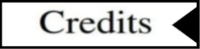
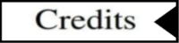
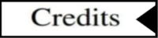

Can't load old browser
** If the game doesn't load well,
RELOAD
the page !!!

Your browser does not support the audio element.
Your browser does not support the audio element.
Your browser does not support the audio element.


 
